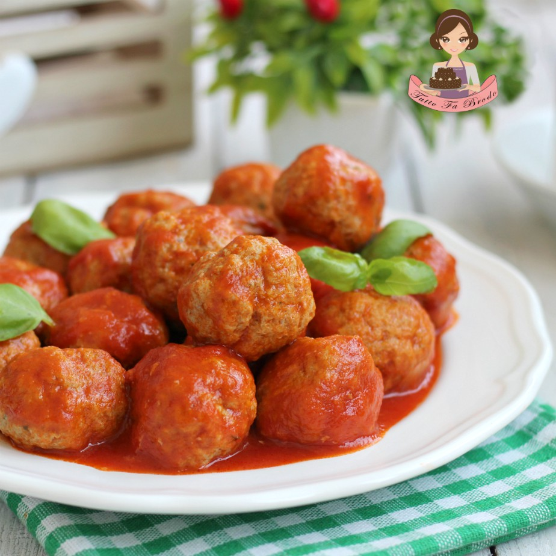

Polpette al sugo

Lista di ingredienti
- Manzo (carne macinata)
- Uova
- Origano
- Pepe nero
- Sale fino
Preparazione
- Unire manzo vitello e maiale in una grande ciotola
- Mescolare formaggio, uova, aglio, prezzemolo, sale e pepe
- Formare delle polpette
- Cuocere per 10-15 minuti
- Scolare su carta assorbente